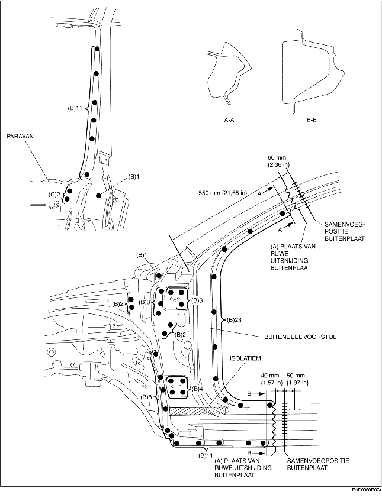
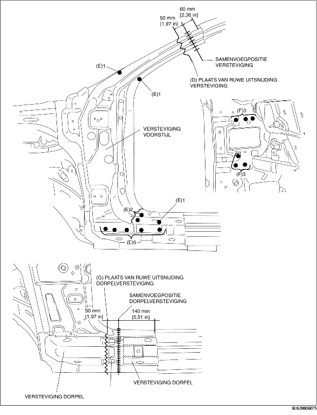
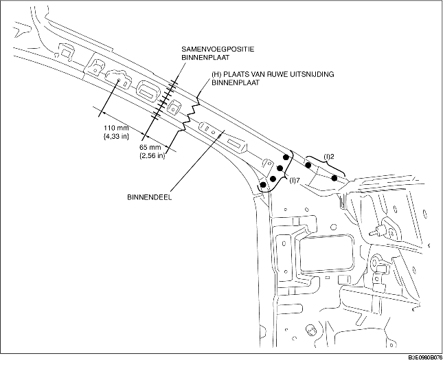

1. Maak ruwe uitsnijdingen bij (A) en boor de 69 punten aangegeven met (B) uit.
2. Verwijderen van het buitendeel van de voorstijl kan bemoeilijkt worden doordat het paravanpaneel in de weg zit. Boor daarom de 2 punten aangegeven met (C) uit en buig het paravanpaneel open.
3. Verwijder het buitendeel van de voorstijl.

4. Maak ruwe uitsnijdingen bij (D) en boor de 10 punten aangegeven met (E) uit.
5. Boor vanaf de onderzijde de 6 punten aangegeven met (F) uit.
6. Verwijder de versteviging van de voorstijl.
7. Maak ruwe uitsnijdingen bij (G) en verwijder de versteviging van de dorpel.

8. Maak ruwe uitsnijdingen bij (H), boor de 9 punten aangegeven met (I) uit en verwijder de binnenplaat van de voorstijl.
